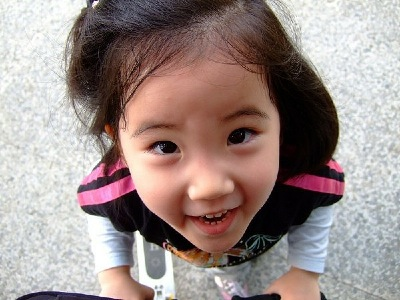
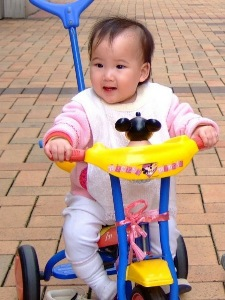
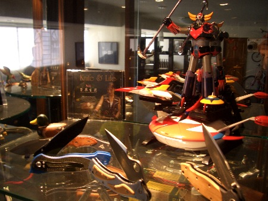
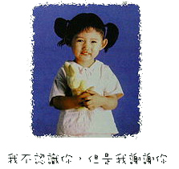
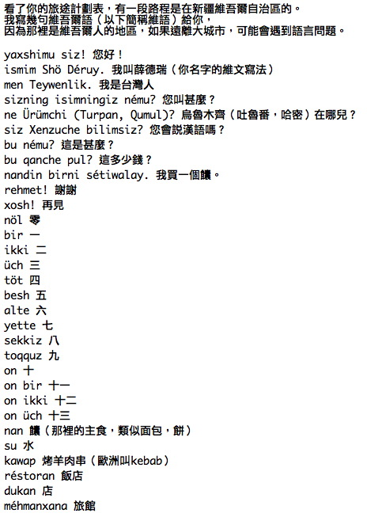
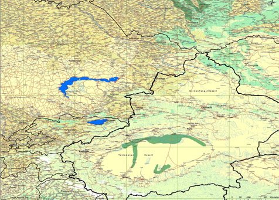
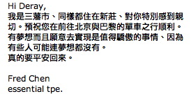

這整個活動，不單單是我一個人，或是十萬元的資金就可以完成。
很感謝很多支持這個想法的人，贊助了各式的物資和資金，希望我可以順利成行，完成大家的夢想。
藉由大家的力量，這個活動正一點一滴的成形當中，曝光的這麼早，不是我願意。
也許都該怪我，網頁的內容我不應該寫的如此詳細，讓自己像透明魚缸中的於一樣讓人觀賞。
本來的想法，是想讓關心這個活動的人，可以了解我現在的進度和情況。
但媒體不在乎這些，他們會挖他們覺得有興趣的部份，去大作文章。
看到某些台的報導，讓我覺得很氣憤，可是，誰又在乎我氣不氣憤呢？
媒體就是這樣，他們得到想要的的話題和收視率，愛怎麼亂寫，誰能阻止？
我只是非常的不希望讓這樣的惡質媒體破壞了整個計畫，破壞了這麼多人共同的夢想。
無論接下來會發生什麼事，也沒人能阻止我出發，既然要做，我就會把他做到最好，即使遍體鱗傷，也是一個爽！
今天整個只能用一個字來形容。
第一，目前募款的金額已經超過當初的目標十萬元，目前正在統計詳細的數字。
所有的捐款明細我都會公佈,每一筆,包含金額,帳戶,以及日期.
我只取十萬元,也就是我當初自己定的金額.
而多的部分,將在行程結束之後,捐做公益使用,不會落入私人戶頭.
其餘所有多的每一塊錢,我都會將它捐做公益使用.
這部分會由基金會的律師幫忙見證,因為我沒有這樣的法律資源.
每個贊助給我的人,都是希望我可以順利的成行,平安的回來.
若真的不幸,旅行告吹或是失敗,我會把所有贊助所得的款項,
通通退回給當初贊助給我的人.
重新聲明一次
1.捐款已經停止,帳戶網頁已經取下.
2.捐款的明細也會公開,超過十萬的部分會捐出.
3.行程失敗,則所有的贊助款項將會退回給當時贊助我的人.
第二，在行程確定之前，也就是我的簽證、機票、路線和裝備都準備完成之前，
我不會接受任何媒體的訪問，你們大可以從這個網站的內容中去作文章，
但是你們是找不到我的，非常遺憾消息曝光的太早，在我都還沒有準備好的情況下。
而且報導的重點沒有著重在這個活動的公益價值，為減緩地球暖化而騎。
贊助款項的部份，今天就不一筆一筆的列出，只有一個例外，我想介紹一下：

|
大哥哥您好： 我是妹妹 君君（1歲） 大哥哥是我們的偶像！ |
繼喬依思之後，我又拿小孩子的壓歲錢了 T_T
這些真的是你們的肺腑之言嗎？應該是爸爸媽媽逼你們這樣說的吧 ~_~
長大如果你們還是耿耿於懷的話，我再把壓歲錢包還給你們。
用滑板車和三輪車完成B2P，這個念頭我不敢想.....因為感覺很恐怖，我九成九會掛在路上，所以還是偷懶一點騎單車吧！
環境品質文教基金會董事長劉銘龍特與薛德瑞先生共同企畫台灣獨特的世界地球日環保活動
「為減緩地球暖化而騎－單車橫跨亞歐行動」
期能以個人單車15000公里橫跨亞歐大陸的創舉，喚起社會對減緩地球溫室效應關注，
共同少開汽車、多騎單車，減少溫室氣體排放，降低能源損耗，增進對溫室氣體減量行動的認同度，
同時也善盡台灣為地球村一員的環境責任，提昇台灣的國際能見度。
Bike to Protect！
希望大家可以共同減少廢氣的排放，降低能源的損耗，簡單的說，就是少開汽車、多騎腳踏車。
而出發日就定在4月22日-世界地球日。
環保活動怎麼搞比較有看頭？
傳統上可以找個人穿布偶裝扮成吃玻璃的外星人，或是印些文宣傳單、辦辦座談會.....等。
今年，環保活動有新的做法！我計畫騎單車從北京到巴黎！用汗水喚醒台灣人的心，
沒錯，也許我就是焦點，但藉由焦點聚集在我身上，我可以讓這件事情有更大的社會意義。
當林義傑很辛苦的跑了111天的沙漠，大家稱他是台灣英雄時，
同時大家也會關注到，他不單單是為了自己而跑，更希望大家可以重視水資源的議題。
同樣的，當我騎單車累得半死的時候，或許很多人看遊記會看得很開心，但我騎單車不只是為了自己爽而已。
希望可以引發更多共鳴（Kero~Kero~），讓更多人和我一起騎單車，
台灣人會重視到地球暖化的議題，現在不騎單車，到時候可能就要學游泳，
因為台灣是個海島國家，沒兩三下就會被年年高升的海平面給淹沒。
底下是環境品質文教基金會和我一起合擬的活動企劃書
人類製造的溫室效應氣體，在過去一百多年來不斷地排入大氣中。 許多科學家相信，這些氣體，包括二氧化碳、甲烷、氧化亞氮、氟氯碳化物等， 已經讓全球平均溫度節節升高，並造成全球氣候劇烈變異。1992年地球高峰會後， 聯合國為了減緩人類引起的溫室效應造成的全球變遷，訂定「氣候變化綱要公約」， 並在1997年於日本京都舉行的第三次締約國會議上，正式簽署影響深遠的「京都議定書」， 明文要求已開發國家承擔全球溫室效應氣體排放減量的責任。
全世界各主要工業國家便著手進行在各領域與層級的溫室效應氣體減量計畫。 從中央政府到城市、社區、學校與個人，各類型的溫室效應氣體減量行動計畫與配套方案、 工具等陸續開發，並在各地積極推展與應用。當全球主要工業國家均在努力降低溫室效應氣體排放之時， 我國的排放量卻增加了79%。目前，我國的溫室效應氣體排放量已經佔全世界約1%， 居於全球各國中第22位。我國進行溫室效應氣體減量的行動，已經到了刻不容緩的境地！
台灣的地面平均氣溫在過去100年以來，已上升約攝氏2度， 是全球增溫的2~3倍，而降雨強度、豪大雨個案數、年降雨日數亦持續增加， 亦在今年冬季創下暖冬高溫紀錄。相信生活在台灣的人們， 都已經感受到氣候型態有明顯的都已經感受到氣候型態有明顯的改變趨勢。 此外，若全球持續增溫，南北極冰帽冰山的溶解，將造成全球海平面上升， 對於台灣的西南沿海低窪地區、東北的蘭陽平原沿海地區，將造成被海水淹沒的危機。
更直接牽涉到我們在台灣的生存與發展。除了政府部門應自中央至地方， 全面擘劃因應外，提升民眾對於溫室效應與全球變遷的覺知(awareness) 與綜合環境素養(environmental literacy)，更是一切行動成功的基礎。 在京都議定書正式生效的今日，我們更應該急起直追。 同時也善盡台灣為地球村一員的環境責任，提昇台灣的國際能見度。 |
這是一個好日子！終於見到刀與生活雜誌的廖崇淵和潘帥勳。
和他們相談甚歡，也從那邊接收了滿滿的物品。
包括一個多功能的LED燈，這個可以吸附在單車上、掛在車尾、綁在頭上或是掛在胸前。
可以當手電筒，以及夜間照明，還有求救SOS的摩斯碼三長兩短閃爍的功能，超讚！
三公升裝的水袋也拿到手了，看起來比想像中來的要小，這樣子騎車喝水就比較輕鬆。
不用拿水壺、轉開蓋子、仰著頭喝、扭緊蓋子放回去那麼麻煩，只要把吸管拉到肩膀旁邊，渴了就可以吸兩口。
但我還是會多帶兩個單車水壺，水永遠不會帶太多，只會渴到沒水喝很痛苦而已 ~_~
還拿到一個很可愛的日本計算機，大概只有小紅帽的奶奶那麼小，很迷你。
分為上下兩個螢幕，只要輸入匯率，就可以直接換算當地物價成為本地的物價。
這樣只要把匯率表給寫清楚的話，到時候要買東西也比較有個概念價位是多少錢！
一大片亮黃色的反光貼紙，這我再思考一下需要貼在什麼地方才不會被晚上開車的白目撞到？
嗶～嗶～嗶～！的高音哨。不知道為什麼一吹哨子就會想起憲兵的交通手勢指揮操 =..=
奇異筆一隻，除了奇異筆之外，我還會多帶很多的原子筆，因為崇淵他們說，這些筆呀、打火機的，
對偏遠地方的人來說，都可以當作是友好邦交的小禮物，只要行李不會過重的話，那我就多帶幾個上路。
還有刀與生活的KNL臂章，等我拿到單車之後，我再親手把它縫製到包包上頭。
以及一個很實用的背包，主要就是要來背水袋用的。
也可以收納我私人的行李，像是護照、錢，這些儘可能不要離開自己太遠的東西。
它背包袋的設計很有趣，可以背直的、背斜的或是背橫的，還有拉鍊防止被奇怪的人硬拉開的機關。
充滿巧思的設計，也是出自總編之手，這樣的包包很適合單車旅行，只可惜市面上應該買不到了。
一只高檔的axis手錶，結合時間、鬧鐘、海拔高度計、溫度計、氣壓計、天氣預報、碼表、指南針等多中功能於一身。
（整個也太多功能了吧！）原來我住的房間海拔高度是122公尺，這也算是冷知識之一吧。
而且時間跟海拔高度的部份都已經調矯過了，只要拿起來就可以直接戴 T_T
（去夜市買鬧鐘的時候，第一件事情不都是要先調時間然後裝電池嗎？）
真的好幾年沒有戴手錶了，從今天這一刻開始，就要開始戴在身上，習慣它的存在和熟悉操作性。
防身的物品，收到帥勳贊助一個高壓的CS摧淚瓦斯。
什麼是CS摧淚瓦斯呢？網路上可以找到基本的介紹，轉載一段如下：
|
毒氣名稱：CS 瓦斯（催淚瓦斯） |
而且平常不使用的時候，它看起來只像是一般的手電筒或是粗一點的筆而已。
若是遇到想打劫的惡人的話，在不見血的情形下，這個東西可能是求生的法寶了。
除了惡人，路上難免也會遇到一些惡狗，本來我只能想到在路上撿一些石頭。
被狗追就用石頭丟它，或是狠狠地踹它，現在多了這個利器，要是真的有狗來追我的話，我會讓牠後悔莫及的。
這是防身用品一，CS瓦斯，防身用品二呢，就是一把刀與生活借出的好刀子了。
（真的是整個家裡面都是收藏刀子呀 @@"）

我接收了一把很漂亮的折疊刀，這把刀會是一路上的好工具。
跟手錶已經調過時間一樣，刀子部份也很貼心的附上了迷你磨刀石，希望這把刀是備而不用。
帶在身邊，總比需要的時候，什麼都沒有要來的保險。
除了上述的物品之外，還從總編手中拿了一整套的刀與生活雜誌。
這是一套非常好看的雜誌，內容跟美編都很出色，只可惜已經收掉了，希望能夠再有重現江湖的一天。
PS.小紅帽的奶奶之所以很小，是因為她的奶奶被大野狼吃掉了。
Blog友情連結+2，網路力量大，而且從別人的文字中聽到關於自己的描述，
那感覺真是奇妙 @~@，有一種，『這個真的是在講我沒錯吧？』的感覺，嗯....真的是在講我嗎 = ="
贊助款項的部份，本來計畫用一個月的時間募到這筆錢，現在離目標十萬元只差一小步了。
到時候十萬元滿了，超過的部份，會在基金會的律師見證之下捐做公益使用。
今天收到了數筆款項：瑞欽是以土壤污染整治為研究議題的碩士班學生。
他也常跟他的小學生講我的事情（教壞小朋友@@"），築夢踏實，到底夢這樣虛幻的東西該怎麼築？
而真的用力踏下去，夢不會垮嗎？其實我都是有點擔心，擔心的時候，發現自己都是同在原地胡思亂想。
這時候通常只要在去找點新的事情做，就不會老是陷入死胡同中拉拔。
我都只檢查中國信託的銀行帳戶匯款情形（因為它有線上銀行）郵局的部份到目前還沒有去刷本子，
所以才會漏了這筆1000元款項，還好沒有造成誤解，真是可喜可賀，瑞欽你可以跟你的小朋友說，
那個大哥哥又要去做傻事了，可以少玩一點跑跑卡丁車，到時等著看好戲 :D
Marvin說因為我的緣故，讓他對單車產生興趣，又因為單車的緣故，居然讓他甩了十幾公斤的贅肉！
（怎麼感覺很多人看到這一句就準備要出門去買單車的感覺）
關於這一點我也覺得很好奇@@"單車真的這麼猛嗎？難道這就是我沒有變成大胖子的關係？
謝謝Marvin大方的贊助了五千元這樣離十萬大關又跨進了一大步。
奇榮兄也贊助了660元（這樣的數字是有什麼特別含意嗎？）
其實選擇安逸的日子並沒有什麼不對的地方。反而像我這樣子的人才會被覺得奇怪跟不被理解。
安逸的生活也可以很轟轟烈烈，差別只在看世界的角度上。
其實在決定要出發之前，我也抉擇了很久很久，我還寫了一篇『年歲與抉擇』的日誌。
或許換個念頭的我，現在正拿著新的合約，而不是計畫單車旅行，常常一念之間就會決定一輩子的步伐。
很久以前聽侯文詠的有聲書『....回想年輕的時候，那些際遇上的變化，真是有如急轉彎，稍微一不小心，就會掉到山谷下.....』
美國喬治亞州的交換學生，多多，他才17歲，好年輕。
我十七歲的時候也是在書中打滾，那時候念五專，考試不是一百分就是九十八，
學期總成績第一名如果不是我，那大家會懷疑可能是從缺，從努力讀書中我也發現了我的成就所在。
學海無涯，離開學校了我也是不停的在看書，只是我能擺脫課本的壓迫，選擇自己想念的東西。
目前多多還是高中生，這段時間是找出自己興趣所在的最好時間。
等你找到了自己要的方向，那上了大學之後，會很過癮的！因為都是你想要學習的東西。
目前可能會有點苦，但是當學生就是這樣，我彷彿昨天還在跟飲料店的老闆抱怨，
為什麼我要參加高中聯考！？但是一晃眼，我已經離開學校了。
要把握住現在的每一瞬間，因為他們隨時一晃眼就都消逝，到時候你手中抓不住什麼，
唯一會留下的就只有你的腦袋裡所吸收的、所體驗的部份。
要是你能有機會的話，我會鼓勵你去參加海外志工活動，你爸媽大概會把我殺了，
因為他們讓你辛苦出國當交換學生絕對不是希望你去當志工，可是這對年輕人來說，是不可多得的絕佳學習機會。
謝謝你的十七塊美金，每一塊錢都代表你的歲數，提醒你自己已經快長大了，
問問自己，想要些什麼？
.
.
.
.
有答案之後，再問問自己，該怎麼去達成？
這兩天跑了好多地方，見到很多『正在』幫助我的好朋友 :D
星期五早上，我請了一天的假（反正假還有，不請白不請）在陰雨中搭著火車北上台北。
先到位於中和市的MSI微星科技在台灣的總部，透過企劃部的Jeff聯繫牽線下，
我和行銷處的經理Sam、大中華市場部的課長Grant以及業務部的Tina見面。
一邊喝著他們準備的熱咖啡，然後談著關於MSI贊助筆記型電腦的事情。
計畫會贊助的是一台尚未上市的S300，但因為我的情況，所以可能會有一些客製化的麻煩在，
比如說我希望能將用不到的DVD燒錄機給取下，以減輕重量，和降低電力消耗。
還有銀幕上蓋不要鑲上水晶（這一款有鑲一圈華麗的施華洛世奇水晶），以避免太引人注目，遭到覬覦。
同時還要將上蓋從鋼琴鏡面烤漆更換成不易磨損的霧面烤漆。
作業系統從預設的Vista換成已經很穩定的XP，RAM加滿，還外加一個外接式的硬碟用來備份資料。
電力部份，8-CELL的電池拿兩組，這樣在完全沒有電力補給的情況下，還可以撐上八小時。
只要省著點用，存點照片和GPS軌跡，以避免記憶卡爆掉應該是足夠使用的。
為了我，他們就要開始修改一台還沒有上市的NB，東調料件、西調貨，真的辛苦各位了。
下午去找ingTouch的Murray，一起吃了午餐，看到創業中的艱辛和秉持自己想做的事情那種毅力，
將來或許有一天，我也會想自己當老闆，雖然被人家雇用也很不錯，只要別人叫你做什麼，然後就照著做就好了，
但如果將來自己想做些什麼，可是又被工作限制住的時候，自己創業好好闖蕩一番也是個挑戰。
主要是談到關於環法遊記出成書的問題，簡單的歸納一下，就是遊記的文字和照片都有了，
文字部份可能會需要潤搞、抓錯字，照片需要後製，整體需要美編排版，這類辛苦的事情。
那等一切都搞定之後，出版要怎麼辦呢？
1.可以選擇用少量數位印刷的方式，有多少人想買就印多少本。
但這樣子的很大問題就是價錢壓不下來，比如說我自己用Hypo做了一本100頁的日本相簿，就花了1840元。
假設遊記排版成書，變成200頁好了，那誰要花三千多塊買一本書呢？就算是我我也不買。
2.若要壓低售價，那只能捨棄數位出版，而改用傳統印刷，但是傳統印刷的問題就在於，
量要非常大，價錢才有辦法壓的下來，那假設一刷1000本或是2000本好了。
這些書，會有人要買嗎？ =.=印這麼多，到時候通通堆在我新莊的房間裡長灰塵 。
拿去送人家，人家說不定還不收，還冷冷的跟你說
『我可不希望我的小孩看到這本書之後，將來跟你一樣書也不念工作也不做，只會騎腳踏車！』
既然沒人要看，那我印那麼多本要做什麼呢？ @@"
出書真是一件麻煩的事情，網路部落格真的是人類的好朋友，有什麼心情屁話，想寫就寫，不用管那麼多問題。
反正重點還是先放在這一次的B2P行程，出書的部份就交給我的朋友們頭痛一下，該怎麼處理比較好。
閒聊之後我才發現，原來那一筆一萬元沒有署名的款項，就是ingTouch贊助的 T_T
難道我帶給你們的麻煩還不夠多嗎？
在大家都有數位相機的年代，我相信ingTouch的想法和做法會成功的，
至少方向上是正確，只看大眾的接受程度如何。加油！
傍晚到位於新店的老地方冰果室、聯合精品團購網的總部-芝廣數位科技，和幕後藏鏡人老闆聚聚。
主要目的是去喝Bianca泡的茶，外加打屁聊聊天，趁機好好休息一下（喘）
老地方一直以來都是我的協助者，從我還很菜（2003.6.18）的時候，第一個Mac中文化軟體，就是在老地方的新聞區中發表，
然後我騎單車環島、跟環法的事情，老地方也是幫忙推薦。還幫我搞過一個Podcast專訪（上集、下集） ^^"
這次我要去更遠的地方，Bianca一邊發抖一邊說好恐怖，可是還是一邊幫忙募款和泡茶（發抖不忘泡茶），
遊記連載的部份，要是大陸的網路很機車的話，老地方也可以幫忙排版上線。 :D
晚上回去母校台科大和基金會的銘龍吃摩斯漢堡，其實我都不把銘龍當董事長 = ="
撇開名片上的稱呼不談，銘龍對我更像是一位大我幾歲的學長，給予我寶貴的意見和協助。
因為他在很多生活上的態度都會給我很好的建議，讓我能在一頭忙亂的時候，靜下心來思考一下。
我本來以為和基金會的合作，會像是機構vs我的感覺，就是我要透過層層的傳遞才能跟上面的人談到話，
然後上面的人有什麼想法，也是透過秘書或是發個文之類的給我 /_\ 囑咐我稟照辦理這樣。
結果我真是太多慮了， 從一開始的接觸，到此時此刻，都是面前這一位沒有絲毫架子，剛剛還吃了幾根我點的薯條。
（你去和一個大老闆吃飯談事情的時候，你會夾一口他盤子裡的菜，然後放到自己嘴巴裡，還直說很好吃嗎？@@"）
就因為這樣的沒架子，所以很多事情我們都是當面直接的談，這種銘龍vs我的合作模式，相處起來很愉快。
目前比較麻煩的，大概就是媒體的問題了。
真無奈我沒有和媒體打交道的經驗，不知該怎麼應付才不會傷了和氣。
越想越多只是多煩自己的而已，不如就專注在事情本身上面。
機票、簽證、裝備、路線、補給，五個大項目要等著我和基金會去一個一個處理。
媒體什麼的，只要不要亂寫一通，那怎麼樣都無所謂了～
談完話之後，銘龍還得去上課，我也要跑著去RB-105聽Vicky的演講。
Vicky和Pinky都是台灣很有名的單車旅行者，她們都是女生，個性截然不同，卻是好朋友，
騎單車跑遍全世界，一年寫一本書，現在開立自己的工作室，總總都是我的典範呀。
只可惜這次的演講，是一個老師為了偷懶所以請Vinky主講兩個多小時的經驗分享。
（抱歉，每次只要老師上課播影片、叫學生報告佔大半學期、找別人來演講，我都會覺得這是很偷懶的老師）
由於它是『課程』的延伸，所以諾大的教室裡，雖然坐滿了人，但都是因為選了這門課而非來不可的人，
而非入座的都是想吸收一些Vinky旅行經驗、生活想法的人。
而真的想聽的人，則不得位子，只好席地或是倚牆而坐（我就是其中一個）。
入座的人，有的倒頭就昏睡、有的開筆記型電腦研究股市漲跌，我真它媽的替你們這些人感到惋惜。
因為之前在台科大唸書的時候，我也是這個死樣子。
既然不想上學，那在學校當米蟲幹嘛？以為每天到學校報到，這樣就是個好學生了嗎？
若是覺得學校給不了你什麼，那也OK，你可以選擇不要念，這沒什麼大不了的。
至少我這麼做了，台上的Vicky也這樣做了，起碼我們在一個事情中做出了選擇，
選擇要走自己的路，還是走別人替你鋪好的路。
Vicky的演講，說了很多，本來我是抱著可以吸收一些單車環遊世界的經驗分享，
但是內容比較偏向於年輕人要如何立志去完成夢想。
Vicky在其中問了一個問題『什麼樣的人適合自助旅行？』
有人回答要充滿樂觀、獨立、積極、勇於冒險...等。
不知道為什麼看到這個問題的時候，我心裡面只覺得，所有的人都適合自助旅行，
不管你的血型、星座、性別甚或年紀，這通通都不是問題，唯一的問題是，你自己想不想去？
大家都會說想，但是這個想，是發自內心的想，不去會死的想，還是一年拖過一年，打嘴炮專用的想。
常常想著想著，到後來就真的只能想想而已了。
所以不要光是想，實際做看看才知道，很多事情，其實沒有想的時候那麼難。
Vicky這堂演講的主旨『Nothing is Impossible！』，共勉之。
今天在寫程式碼註解之餘（要交接工作了）順便蒐集了我會經過的八個國家的一些基本資料。
這八個國家依序分別是：中國、哈薩克、俄羅斯、烏克蘭、波蘭、德國、比利時、法國。
然後發現一些顯而易見的問題：
1.我的數學一定要很好才行 ~_~
八個國家就有六種不同的幣值，中國用人民幣（MCY）1:4.26台幣，哈薩克用堅戈(KZT)1:0.26台幣。
俄羅斯用盧布（RUR）1:1.26台幣，烏克蘭用格里芙納(UHR)1:6.52台幣，波蘭用茲羅提(Zloty)1:11.15台幣，
德國、比利時和法國用歐元（EU）1:43.42台幣，而我會帶去出門的，大概是天殺的美金（USD）。
或許行李中要考慮放一台計算機，不然騎到後來，東西到底是貴還是便宜，我可能會心算到腦殘～
2.我的語文一定要挺得住才行 @_@
雖然我從來都不覺得語言不通對於旅行會造成什麼影響，一句法語都不會講，我還是好好的活了兩個月，
還順便學了幾句實用的回台灣，要是現在遇到法國人，我還可以問他『住旅館一個晚上多少錢？ 』 =.=
反正會比手畫腳外加臉部表情、還有紙筆鬼畫符，我相信應該是可以通行天下的！
就算 這一路上的國家說得都是不同的語言，根據簡單的統計，一共有德語、法語、荷蘭語、烏克蘭語、波蘭語、
俄語、哈薩克語，別以為到了中國就沒事，每個省都有一大堆的方言，我怕我講中文大家也跟我搖頭說聽不懂 >"<
除了今天發現的這兩點令人開心的結果，（不知道為什麼就突然覺得這是一件好事），
我想後續還會有很多奇奇怪怪的問題要想辦法解決。
這次出發前，要先去醫院挨很多針，因為一路上會經過一些衛生環境不是挺好的國家。
估計自己大概需要打4~5種疫苗吧。
其實我不怕打針，因為針頭插進去的感覺還挺有快感的，所以我很喜歡去捐血，
捐血用的那種針頭，真是粗的有點像吸管，非常有feeling～
我怕的是我打了這麼多的針，然後經過一些疫區的國家，那回台灣之後，我就不能捐血啦 /_\
我一年捐血三次的短暫樂趣，就要被剝奪了 T_T
今天查了一下自己的捐血記錄，累積到目前為只一共捐了37次，每次500CC。
以我現在的體重，今天量是79KG（很不錯吧～3月1日從83KG開始減，一個星期就瘦了4KG了）
醫學常識，血液佔人體的1/13，所以我體內一共有大約六公升的血液在流動。
捐了37次X500CC，大概就捐掉了將近19公升，已經把自己全身的血給捐光光3次了。
我只要每次想到之前那一個血液基金會的廣告一個小女孩抱著一隻小玩偶，

天真無邪的說『我不認識你，但是我謝謝你。』的時候，我都會很想把袖子捲起來。
看來今年最後一次可以捐血是在3月23日，之後回來不知道要列入觀察期多久 XD
疫苗施打的部份，由於銘龍的弟弟剛好是醫生，所以就請他幫我研究一下要打哪些針。
今日贊助的部份，兩位Mac使用者Gina和徐國凱分別贊助了10美金和台幣2000元。
被我抓到了吧，又是在我網站潛水多年的傢伙，你們終於浮上水面了 :D
我出國的這段時間，就比較難更新Mac中文化下載的網頁，要是能找到交棒的人該有多好 ._.
台積同仁-吳文斌贊助台幣2000元，目前台積電有贊助錢給我的，九成以上都是我不認識的人 ~_~
而且 都是幾千幾千的贊助，出手很慷慨，讓我很激昂。
今天的特別人物，還是被大陸的學生給拿下了，一位20來歲，在德國唸書的鄭初陽贊助了8美金。
重點不在於他贊助了多少錢，他在德國打工唸書（看來應該是學設計的）養自己，自給自足，
這8美金是上個月結餘的，其實我不能收。
但這些其實都不是重點，重點在於他寫給我的信件，他仔細的看了我的路線。
發現我有一段路會經過新疆維吾爾自治區，在那邊遠離城市，說中文是不會通的。
然後他很詳細的寫了幾句我可能會用到的話語的維語版本。

看起來真的很酷！連我的名字都有維語的版本，問題是看到這些字母，分開都看得懂，
連在一起就不知道該怎麼發音了 Orz
初陽隨信還附上了一張正確而且詳盡的新疆區地圖

由於到目前為止，我都是使用Google Earth 來規劃路線。
在歐洲地區，從到德國之後，就可以拿到很詳細的路線地圖（連路名和編號都有）
但是中國和中亞，都只是一條黃色的線，也搞不清楚這條路是不是現在還真的存在？
初陽的這張地圖包含了新疆地區的細節，而且地名還是正確的維吾爾版本。
可以讓我從哈密一路依循著騎到吐魯蕃，經過烏魯木齊，甚至連哈薩克大半的地圖也在其中。
地圖要怎麼帶上路的問題也是令人頭痛的一點，要是帶電子版的存在電腦裡，
那固然可以省下空間和重量，但是有旅行過的就知道，地圖就是要拿在手上，邊看邊騎，
放在電腦裡，難不成電腦要開機著拿在手上當導航 ~_~
而且要是萬一電腦沒電了，或是故障的話，那就葛屁了。
所以會帶紙本的地圖出國，但這樣也很頭痛，因為地圖的數量太多了，
真的要帶的讓我知道『現在身在何方』這種程度的詳細地圖，可能行李就全裝這些就夠了。
考量一下，可能只會帶中國的地圖，然後移動到下一個國家之後，在當地購買當地的地圖，
然後再配合地圖移動，同時電腦裡也記錄電子檔案的地圖，要是有電力供應的情況下，
起碼住宿的當天晚上，可以規劃明天的路線怎麼走。
部落格協助宣傳新增三筆友情連結：
：B2P 一萬五千公里的Deray（我今天才看到這一篇 @@"）
就我認知的部份，網路不算媒體。因為網路比較虎爛，媒體雖然也虎爛，但是大家比較會當它正經事來看。
所以一但這件事在我還沒準備好的時候就在媒體上曝了光，那我就不能繼續輕鬆的這樣虎爛下去了～ （死）
明天星期五要北上台北，見一些朋友談一些事情，也許星期六還不會回到新竹。
所以這個網頁的更新可能會暫停1~2天。
順便張貼一張尋人啟事，
『贊助的戶頭中，有一筆一萬元台幣的款項，但沒有署名是誰捐的，
請善心人士看到訊息之後，寫封mail給我，多謝。』
今天下班之後，六點半到八點半這段時間，我的好朋友同時也是台積鐵馬社的高手-建州。
利用下班時間幫大夥上了一堂基本單車維修的課程，
因為參加的各位都是騎單車的老手，所以這個課感覺上好像就是為了我而開的感覺 ~_~
單車維修是很重要的部份，不然萬一車子壞掉了，即使只是一個簡單的破胎，都可以讓行程大受影響。
這一點我在單車環島的時候就親身領教過了，本來一路上都很順利，結果騎到楓港的時候就破胎，
我不僅是不會補胎、不會換內胎，我根本連基本的維修工具和替換的備件都沒有帶，
根本就是一個阿Q的傻瓜旅行，保佑自己騎台灣一圈，單車都不會壞掉。
結果車子壞掉了。只好蹲在路邊哭，哭完了就開始攔經過的車子，看有沒有好心人願意載我一程。
我把單車停在旁邊，看到有卡車或是小貨車經過，我就開始揮舞我的雙手，希望可以引起別人的注意。
結果當然是有引起注意，但他們以為我是在打招呼，也很開心的跟我揮揮手，然後呼嘯而過....只留下傻眼的我。
後來好不容易攔到便車，去單車店換內胎，正開心一切都重回軌道的時候，腳踏車的鏈條它媽的斷掉了 /_\
我就牽著單車沿路找有沒有腳踏車店，整個就是一個辛酸加可悲。
所以要出發去法國的時候，我還特地去的當兵同是機車連的好朋友-阿宏開的風火輪單車店，
在那邊學怎麼樣換內胎跟外胎，看著老闆熟練的換過一次，我點點頭就代表會了。
而真的動手第一次換內胎的時候，人已經在法國，孤立無援的蹲在郊區的道路旁，淋著西哩哩的小雨...
人生凡事什麼都有第一次，起碼我第一次換內胎的結果還不錯，我很滿意！
只是不知道哪個環結出了錯，剛換上去馬上又破胎了 /_\
環境可以磨練技術，在法國的時候就這樣慢慢騎車、又破胎了就試著動手換，晚上睡前比較有空的時候，
還嘗試了自己補內胎，這樣又多了一條備用的內胎，物資缺乏的時候，這些可都是無價之寶。
這次要騎的路線比較遠。也比較崎嶇，光是會換內胎、外胎，肯定還嫌不夠。
所以今天又學了像是更換飛輪（也就是後齒輪）、更換鏈條、更換煞車片、以及細部調整單車的技巧。
短短兩小時下來，吸收了好多實用的資訊，不知道下次我動手開始修理單車的時候，
是在什麼樣的荒野，搭配什麼樣的氣候 ~_~
下班回家，收Email，世界最大的自行車鏈條製造廠商，每年製造一億五千萬條的自行車鏈。
最高貴頂極的自行車中，也可以發現他們的產品，而這間廠商，居然也是台灣製造MIT。

KMC 桂盟企業股份有限公司的行銷企劃Anthony，主動聯繫說願意贊助旅行中會需要替換的自行車鏈。
即使是這樣微小的零件，KMC也願意拿出他們最好的來贊助，但缺少了這條車鏈，則哪裡也去不了。
如此貼心的合作和贊助，當然是樂意接受 :D
今日捐款部份，Holing，一樣是Mac的使用者，在老地方看到我的消息之後，贊助了30美金。
請你別擔心，因為再多擔心也沒有用，我會計畫出一個安全又可靠的行程，
雖然計畫趕不上變化，但起碼不要讓人家覺得這趟旅行是去送死的，我會好好規劃細節，讓在台灣的人安心。
住在 美國三籓市的Fred（美國@@"，網路真是無國界呀。）贊助了50美金。
（尷尬尷尬～原來Fred不是住在美國三籓市，而是暱稱叫做三籓市 ~_~ 我們同住新莊啦，我三月底就要搬回去了）

我覺得我很幸運，能得到這麼多的協助和支持，事情進展的順利程度，好到令我覺得大概什麼地方準備要出差錯了。
我比較習慣坑坑洞洞、跌跌撞撞的生活，也許是我想太多，事情進展的順利又何嘗不是一件好事？
就把這一切當做是暴風雨前的寧靜，冒險前的休憩，讓我好好養精蓄銳，準備這一切。
目標真的很簡單，『順利出發，平安回來』，中間的過程，到時再看著辦吧！
雅婷（鴨子）是我同事的朋友，因為她手上握有我和男人接吻的照片，都怪尾牙....都怪那一千元的紅包....都怪想這企劃的人....
為了區區一千元的尾牙紅包，我就這樣埋下來將來可能會身敗名裂的種子，真的好想哭。 T_T
剛好雅婷贊助的金額也是一千元，這個數字看起來其實有點夢魘的感覺（抖）
小喵贊助了台幣1040元，因為她在某數字公司上班，（還好不是贊助0204元 ^^"） 。
我們都還年輕，還來得及瘋狂。其實只要心裡還有夢想，還有一種對自己的期待，不論幾歲都依然年輕。
大陸的同胞，相當有創意，住在杭州的23歲學生-吳剛，贊助了12.77美金。
同胞非常有趣贊助這筆金額，是有它的意義在的，12.77美金換成台幣，剛好是422元。
而我出發的時間，正好是4月22日 :D（下次我會挑個十二月底的日子出發，屆時不要忘記你的幽默感喔 XD）
其實就算吳剛不特地跟我說，我也會把這一路上所經歷的部份，分送給贊助過我的朋友，
可能是一雙被我穿爛的襪子、或是某天買東西的發票、也許是絲路上的黃土或俄羅斯的雪水。
我會將這些保留起來，等我完成旅行之後，將他們發送出去，雖然不能讓你們和我一起同行，
但因為你們的幫忙，這趟旅行才可以成行，所以這些獨一無二的紀念品，我想會比商店的明信片還要珍貴。
本來想當作祕密計畫進行的，但是就偷偷透露一下，讓想拿穿四個月臭襪子的人可以有個期待～ :D